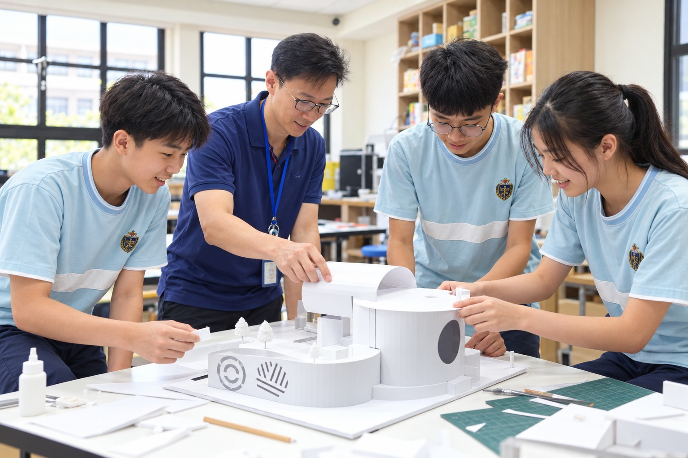
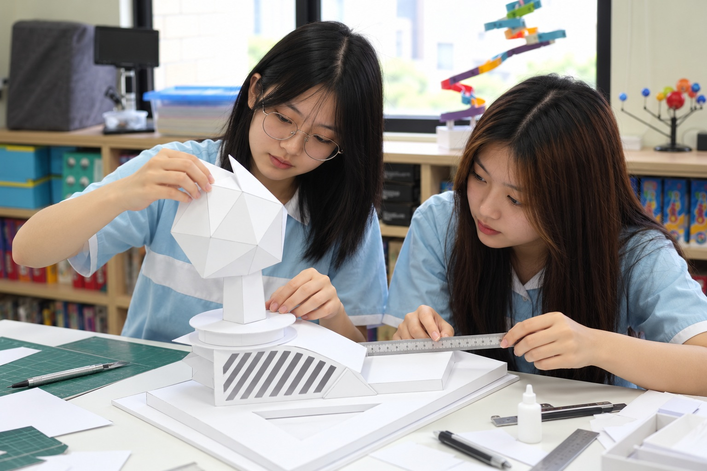
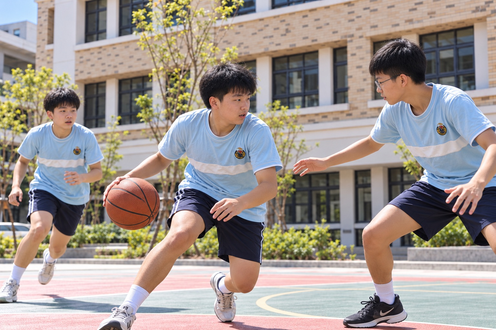
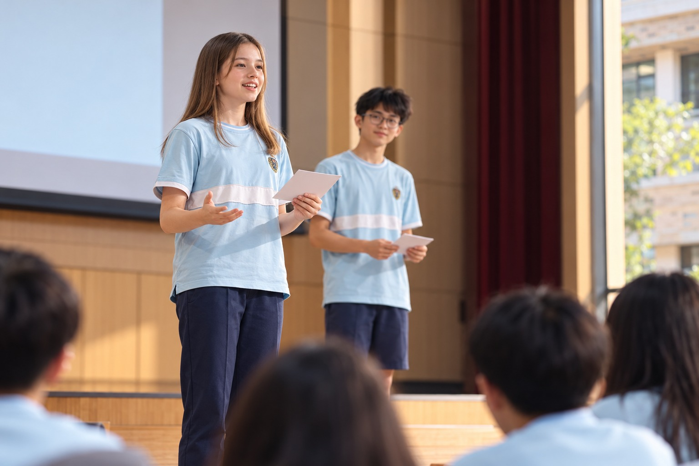
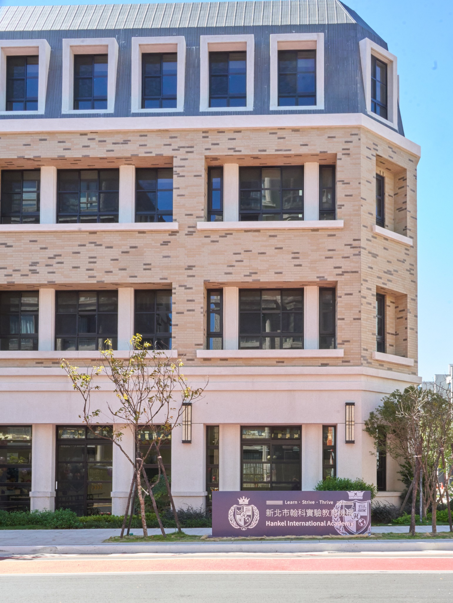

探究與思辨
INQUIRY & CRITICAL THINKING
從學科學習到跨域專題，引導學生提出問題、蒐集資料、比較觀點，並以證據支持自己的想法。學習不急著停在答案，而是進一步理解「為什麼」，建立分析、判斷與獨立思考的能力。
Think Independently.
Lead with Purpose.
進入中學，孩子開始面對更多選擇，也逐漸形成對世界的看法。學習不只是理解知識，更是學會判斷、清楚表達，並有能力把想法付諸行動。
翰科以扎實的學科能力為基礎，結合跨域探究、科技實作與真實世界的學習經驗，陪伴孩子逐步找到自己的能力與方向。
立即預約｜中學階段教學說明會 ↗
OUR BELIEF
當知識越來越容易取得，孩子更需要學會辨別資訊、理解不同觀點，也能說明自己的判斷與理由。
在翰科，我們重視學科基礎，也重視知識如何被理解與運用。透過閱讀、討論、探究與實作，讓學生練習提出問題、尋找證據、修正想法，在一次次嘗試中建立學習的方法。
我們期待的，是能思考、敢表達、會行動，並逐漸理解自己為何而學的年輕人。
LEARNING FOR THE FUTURE
中學階段的學習，是讓不同領域的知識開始連結，也讓學生有機會探索：我關心什麼？我能做什麼？我想如何參與這個世界？

INQUIRY & CRITICAL THINKING
從學科學習到跨域專題，引導學生提出問題、蒐集資料、比較觀點，並以證據支持自己的想法。學習不急著停在答案，而是進一步理解「為什麼」，建立分析、判斷與獨立思考的能力。
INNOVATION & CREATION
結合 STEAM、科技與數位應用，讓學生從觀察需求、構思方法到動手實作，在測試與調整中理解知識如何運用。面對不如預期的結果，也練習找出原因、修正方法，持續推進自己的想法。

GLOBAL PERSPECTIVE
透過跨文化交流與真實議題探索，讓學生認識不同的生活經驗與思考方式。從身邊的社會與環境出發，逐步理解全球議題，培養國際視野，也學習對自己的選擇與行動負責。
理解不同觀點，
也思考自己的選擇與責任。

VOICE & COLLABORATION
有觀點之後，還需要學會清楚說明，也願意傾聽與回應。
在討論、合作與成果發表中，學生練習整理內容、說明理由，將複雜的想法轉化成別人能理解的表達。面對不同意見，學習提問、溝通與協調，讓團隊能一起往前走。
從課堂中的一次發言，到台上的一場分享，讓表達成為參與學習、連結他人與推動行動的能力。

SPACE TO GROW
關注學生的學習差異與成長需求，透過日常互動與回饋，協助學生理解自己的優勢與需要加強的地方，逐步建立適合自己的學習方法。
結合科技設備、運動與藝文場域，讓學習從課堂延伸到實作、創作與團隊活動，支持學生發展不同興趣，也探索自己的可能。
從安排學習、完成任務到參與團隊，陪伴學生逐步建立自律、合作與面對挑戰的能力。
在愛與尊重中，陪伴學生建立自己的觀點，也找到前進的方向。
YOU ARE INVITED
從「學會知識」，走向
「形成自己的能力與方向」。
誠摯邀請您參加中學階段招生說明會，了解翰科的教育理念、課程方向與學習環境，一起思考適合孩子的下一段學習旅程。
為確保活動品質，各場次名額有限，敬請提早報名。
說明會地點新北市翰科實驗教育機構
新北市林口區東湖路11號
招生對象116學年度（2027入學）
七年級新生、八年級轉學生
課程、招生或入學相關問題，歡迎加入中學階段官方 LINE 諮詢。